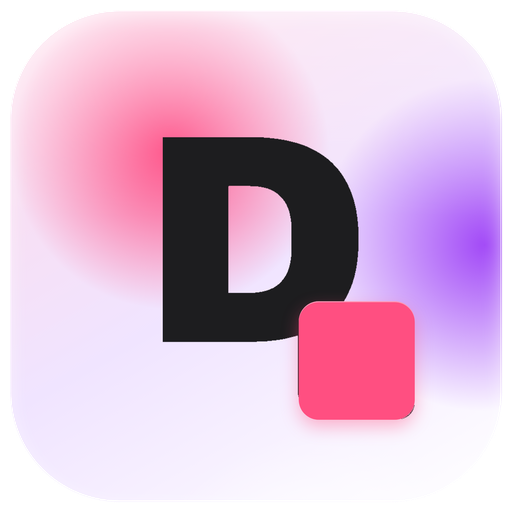
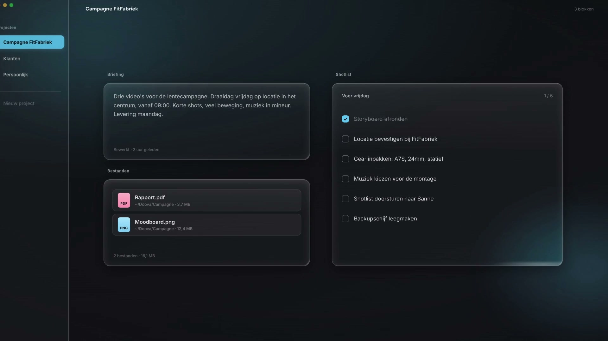

Een canvas dat niet tegenwerkt
Sleep blokken waar je ze hebben wilt en pas ze aan in formaat. Ze klikken alleen vast als ze echt vlak bij elkaar komen, zoals vensters op je Mac. Verder is alles vrij.

Doova Downloadv0.3.7 · macOS 12 of nieuwer · gratis
Doova is een werkblad voor je Mac. Notities, taken, bestanden en je agenda staan naast elkaar, precies waar jij ze neerlegt.
6,5 MB · Apple Silicon · updates komen automatisch binnen

In actie
Functies
Elk project is een canvas. Wat je erop zet, bepaal je zelf.
Sleep blokken waar je ze hebben wilt en pas ze aan in formaat. Ze klikken alleen vast als ze echt vlak bij elkaar komen, zoals vensters op je Mac. Verder is alles vrij.
Typ en het wordt een notitie. Sleep er een bestand in en het wordt een bestandenblok. Vooraf kiezen hoeft niet.
Sleep een bestand in een blok en het opent meteen in Finder. Afbeeldingen krijgen een echte preview, de rest een gekleurde badge.
Koppel blokken en ze krijgen samen een kader met een naam. Klap de groep in tot één chip en verplaats alles in één beweging.
Een maandoverzicht met je eigen afspraken, plus de deadlines die al in je taken staan.
Glas in licht of donker, dat je bureaublad zachtjes laat doorschemeren. Of bemboe, met dikke randen en harde schaduwen. Alles blijft leesbaar, ook met verminderde transparantie.
Zoek door al je projecten, voeg een blok toe of exporteer, zonder je muis. Elke sneltoets is aan te passen.
Een project als volledige Markdown, of een korte digest met alleen je open taken en deadlines.
Alles staat als leesbare JSON op je eigen Mac. Geen account, geen cloud, geen tracking. Automatische backups zitten erin.
Download
Gratis, geen account, geen abonnement.
Doova 0.3.7 · DMGDoova is nog niet ondertekend bij Apple. Bij de eerste keer openen: rechtsklik op het app-icoon en kies Open, daarna vraagt macOS het niet meer.